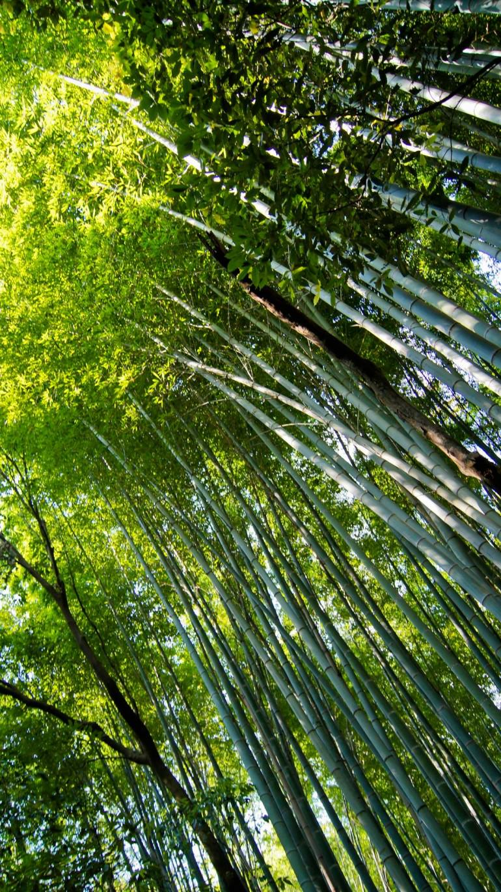
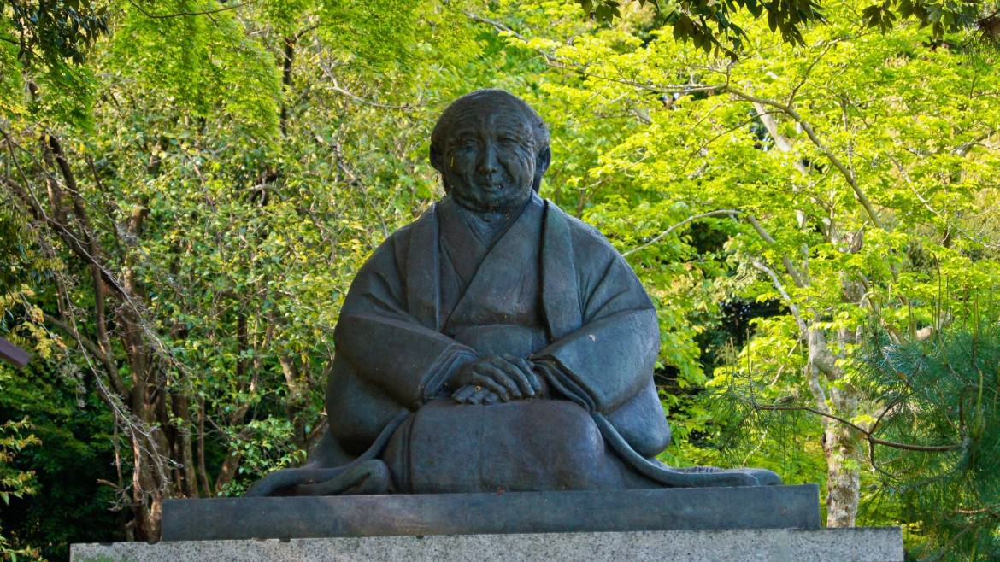
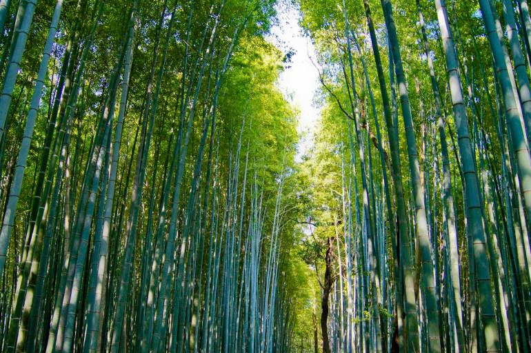

Bambusowy las w Arashiyama



Bambusowy las w Arashiyama to miejsce, w którym poczuć się można jak w innym świecie.
To obowiązkowy punkt podczas wycieczki do Kioto. Tysiące sięgających chmur drzew stanowi główną
atrakcję tego rejonu Japonii. Sagano położony jest na terenie popularnego wśród turystów obszaru Arashiyama,
tuż za miastem Kioto. To bez wątpienia największa atrakcja tego regionu,
którą już tysiące lat temu odwiedzały rodziny japońskich arystokratów.
Bambusowy gaj jest najczęściej fotografowanym miejscem w Kioto. I nie bez powodu. Soczysta zieleń łodyg stanowi
doskonałe tło dla artystów. Każdy stara się uchwycić ten majestatyczny charakter bambusowego
gaju, którego jednak zdjęcie nie jest w stanie w pełni pokazać. Magii dodaje delikatny wiatr, który kołysze łodygami.